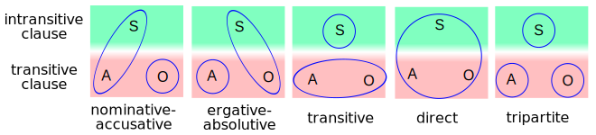

Morphosyntactic Alignment
In linguistics, morphosyntactic alignment is the system used to distinguish between the arguments of transitive verbs and those of intransitive verbs. The distinction can be made morphologically (through grammatical case or verbal agreement), syntactically (through word order), or both.
Semantics and grammatical relations
The difference between transitive and intransitive verbs lies in the amount of core arguments they have. A Transitive verb takes both subject (in transitive cases they are called agents (A) and will be hence forth) and object (O) while the Intransitive one only takes subject (S).
The alignment can take several different forms:
- Nominative–accusative alignment languages treat the agent and subject the same while leaving object alone (A=S, O). The S and A case is called Nominative while O have Accusative case as occurs with nominative ''-us'' and accusative ''-um'' in Latin: ''Julius venit'' "Julius came"; ''Julius Brutum vidit'' "Julius saw Brutus". English is also a nominative-accusative language, I saw him, He saw me
- Ergative–absolutive languages treat the subject and object the same while leaving the agent alone (S=O, A). The agent is marked with Ergative case while subject and object take Absolutive. Ergative–absolutive languages can detransitivize transitive verbs by demoting the O and promoting the A to an S, thus taking the absolutive case; this is called the antipassive voice.
- Transitive languages treat the agent and object the same while leaving the subject alone (A=O, S). Subject takes Intransitive case while agent and object take the Transitive case.
- Direct languages treat the agent, object and subject all the same (S=O=A) and hence mark none of them.
- Tripartite languages treat subject, object, agent all seperately (S, O, A).
- Fluidlanguages treats some verbs as Nominative–accusative, while treating others as Ergative–absolutive.
